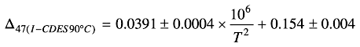

The Δ47 value of the sample can be used to calculate a temperature (which is thought to be related to the temperature at which the sample was formed) using various equations. This step calculates temperatures for six common equations.
Six different equations are supported for calculating temperature (see table below for details). Each of these equations has been determined assuming that various constants (see the constants tab in the configuration screen) are set to their default values. If any of these constants are not their default value, then the equations are not valid, the temperature cannot be calculated, and the word "UNDEFINED" is written in place of the temperature.
Additionally, each equation is designed for use with a specific acid temperature (AT) and acid fractionation factor (AFF). If one or more of the replicates in the given sample were prepared with a different AT or AFF, the Δ47 of that replicate needs to be adjusted. The algorithm used for doing this is:
For each temperature equation, the above algorithm is executed for each replicate and a new column of Δ47 values is created. The mean, standard deviation, and standard error of this column are then calculated.
Finally, a temperature is calculated by setting this new Δ47 equal to the appropriate equation and solving for T (temperature). To indicate the range of error, three temperatures are calculated for each equation: mean Δ47 - standard error, mean Δ47, and mean Δ47 + standard error. The results are then converted from °K to °C.
| Authors | AT | AFF | Equation |
| Anderson et al 2021 | 25 °C | 0.000 |  |